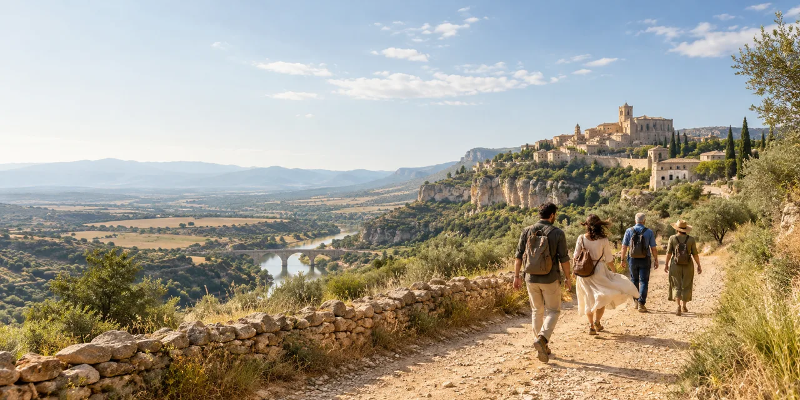

A milestone away
Bring loved ones together for a birthday or anniversary with a setting, rhythm and details that belong to the guest of honour.
Bring your people together in Spain for a celebration that could not have happened anywhere else, because it could not have belonged to anyone else.

A destination celebration is more than bringing guests to an attractive location. The right place changes how people arrive, spend time together and remember the experience. We start with the reason for gathering and the people involved, then look for a setting that serves that story.
For international clients, a project may involve location research, creative direction, collaborator coordination, guest flow, scheduling and on-site production. The exact scope and destination are discussed before work begins and depend on service availability.
We are based in Madrid and consider projects elsewhere in Spain. Share the place you have in mind, even if it is still only a feeling.
Bring loved ones together for a birthday or anniversary with a setting, rhythm and details that belong to the guest of honour.
Let a series of shared moments build towards the central celebration, without filling every hour for the sake of an itinerary.
Reconnect in a place that lets people slow down, talk and experience something distinctive together.
Tell us about the person, your guests, the dates and any practical constraints. We can then explore the creative direction and the locations that might support it. Availability, travel logistics and budgets are established as part of planning.
Looking for a more personal journey with no central party? See bespoke experiences in Spain ↗
A detail, a feeling or a slightly impossible idea is enough for a first conversation.
Email Natalia ↗Or write directly to nataliaefimova.com@gmail.com.